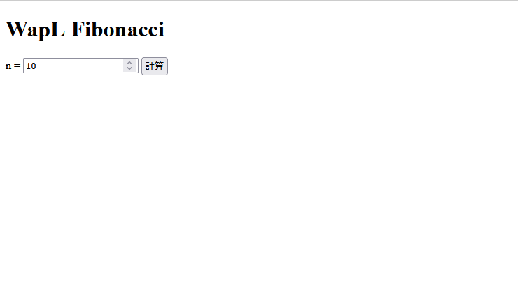

WapLでWebAssemblyにビルドする
環境構築
waplc_v0.2以降ではWebAssembly(以下wasm)向けビルドに対応しています。またwapl-cliが古いとwapl-cliでのwasm向けビルドに対応していないことがあるのでその場合は第1章のWapLを導入にある最初のコマンドで更新してその後waplup updateでwaplcの更新をしてください。
まずはwasm向けにビルドするためにまずはwasmに対応したclangや.wasmから.watファイルを作るツールをインストールします、すでにこれらがインストールされている場合はwapl.tomlファイルに設定を書くところまで飛ばして大丈夫です。
wgetがなければインストール
$ sudo apt update
$ sudo apt install -y wget gnupg
wasi-sdkをインストール(バージョンはLLVM-21に対応しているもの)
$ wget https://github.com/WebAssembly/wasi-sdk/releases/download/wasi-sdk-29/wasi-sdk-29.0-x86_64-linux.tar.gz
$ tar xf wasi-sdk-29.0-x86_64-linux.tar.gz
wasmの実行のためのランタイムをインストール
$ wget https://github.com/bytecodealliance/wasmtime/releases/download/v40.0.0/wasmtime-v40.0.0-x86_64-linux.tar.xz -O wasmtime.tar.xz
$ tar -xf wasmtime.tar.xz
.watファイルを生成するためのツールをインストール
$ sudo apt install wabt
ではここからwapl.tomlに設定を書きます。ここの例は上記のインストール方法で環境を整えた場合の設定です
[wasm]
input = "src/main.wapl"
output = "target/プロジェクト名.wasm"
opt = "O3"
clang = "$HOME/wasi-sdk-29.0-x86_64-linux/bin/clang"
bitsize = "32"
sysroot = "$HOME/wasi-sdk-29.0-x86_64-linux/share/wasi-sysroot"
wasm2wat = "wasm2wat"
wat = "src/プロジェクト名.wat"
wasmruntime = "$HOME/wasmtime-v40.0.0-x86_64-linux/wasmtime"
memory-size = "655360"
それぞれの項目について説明します。
input,output,opt,clang,bitsize、に関しては[build]のときと同じです。clangのところはちゃんとwasmに対応したものに切り替えておきましょう。sysrootにはwasi-sdkのshare/wasi-sysrootのパス、wasm2watにはwasm2watのパス、watは生成される.watファイルの名前、wasmruntimeはwasmtimeのパス、memory-sizeにはwasmでのヒープmemoryのサイズです。
ここまで設定できたら
$ wapl-cli wasm
でビルド
$ wapl-cli wasm_run
でビルド&実行
$ wapl-cli wasm_browser
でエントリーポイントやlibc無しでビルド
のようにしてビルドすることができます。
wapl-cli wasmやwapl-cli wasm_runでビルドするときはエントリーポイントを作るのであれば__main_void():i32または__main_argc_argv(i32 argc, ptr:ptr:char argv):i32としてください。またwapl-cli wasm_browserではlibcとリンクして使っていたmallocやprintfなどの関数が使えなくなりますしそれらを内部で使っているため標準ライブラリのstdにあるものも一部使えません。さらにprintlnやformatなどの組み込み関数も内部ではlibcを使っているため使えなくなります。そのため代替となる関数を組み込み関数と名前衝突が起こらないように作って使ってください。
WASM向けビルドをして実行するまでのチュートリアル
とりあえずプロジェクトの作成からビルド&実行
$ cd ~/projects/
$ wapl-cli new hello_wasm
$ cd hello_wasm
まずhello_wasmプロジェクトを作ります。
次に自分の環境に合わせてwapl.tomlファイルに設定を書いてください。
次に./src/main.waplを以下のように書き変えてください。
fn __main_void():i32{
println("Hello, WASM!");
return 0s;
}
これで
$ wapl-cli wasm_run
とすることでビルド&実行されて
Hello, WASM!
と表示されるはずです。ポイントとしてはネイティブではmain():i32だったエントリーポイントが__main_void():i32になっていることです。
ブラウザで動くものを作ってみよう
ここではWapLをwapl-cli wasm_browserを使ってビルドしてWapLで作った関数をTypeScriptという言語から呼んでブラウザで表示するというものを作ってみましょう。プロジェクトは先ほど作ったhello_wasmを流用します。まず、Node.jsやTypeScriptの環境がない場合はその環境を構築します。以下の環境構築方法は筆者が行った例です。自分の環境に合わせた方法で行ってください。
$ cd ~
$ curl -o- https://raw.githubusercontent.com/nvm-sh/nvm/v0.39.6/install.sh | bash
$ export NVM_DIR="$HOME/.nvm"
$ [ -s "$NVM_DIR/nvm.sh" ] && . "$NVM_DIR/nvm.sh"
$ nvm install --lts
$ nvm use --lts
$ node -v
$ npm -v
$ cd projects/hello_wasm/
$ npm init -y
$ npm install --save-dev typescript ts-node @types/node
$ tsc --init
$ npm install --save-dev vite
これでhello_wasmプロジェクトでNode.jsでTypeScriptを使う環境が整いました。以降はプロジェクトでnpm init -yとtsc --initさえすればいつでもNode.jsが使えるようになります。
次はWapLのWASM向けライブラリwasmplを取得します。
$ wapl-cli get_lib wasmpl 0.1.2
ここではwasmplのバージョン0.1.2を取得しましたが、今回使う機能はこの0.1.2時点である機能で十分なのでこのバージョンにしています。WapL標準ライブラリstdにあるものを順次wasmplにも同様のwasm版のを作っていっているのでそれらが使いたい場合はより新しいバージョンであればあるかもしれません。
次に./src/main.tsを作ります。ここにWapLの関数を呼び出すTypeScriptのコードを書いていきます。
次は./index.htmlを作ります。
ここからコードを書いていきます。このチュートリアルではWapLで整数nを受け取ってn項までのフィボナッチ数列の配列を返す関数を作って、それをTypeScriptから呼んで配列の要素すべてを画面上に表示するようなものを作ります。
index.htmlには以下のように書きます。
<!DOCTYPE html>
<html lang="en">
<head>
<meta charset="UTF-8">
<title>WapL Fibo</title>
</head>
<body>
<h1>WapL Fibonacci</h1>
<label for="inputN">n = </label>
<input type="number" id="inputN" value="10" min="0" />
<button id="calcBtn">計算</button>
<pre id="output"></pre>
<script type="module" src="./src/main.ts"></script>
</body>
</html>
./src/main.waplには以下のようにフィボナッチ数列を作るfibo(isize):*:isizeという形の関数を作ってexportすることでTypeScript側で呼べるようにします。
use "./lib/wasmpl/wasmpl_all.wapl" // wasmplにあるものをすべて使えるようにする
fn fibo(isize n):*:isize{
#=(sz,sizeof(isize),isize);
// 配列のためのメモリをヒープ上に確保
// ここでは組み込み関数のmallocがlibc依存のため使えないのでwasmplにあるmalloc_wasmを使う
#=(arr,malloc_wasm(*(n,sz)),*:isize);
if(<=(n,1_)){
=(arr,Array(1_));
return arr;
}
=(arr,Array(1_,1_)); // 初項
#=(i,2_,isize);
// フィボナッチ数列を計算
loopif:(<(i,n)){
=([](arr,i),+([](arr,-(i,1)),[](arr,-(i,2))));
=(i,+(i,1_));
}
// *:isizeの型で配列を返す
return pmove(arr);
}
export fibo; // exportして外から呼べるようにする
そしたら、TypeScriptでfiboを呼び出す処理を./src/main.tsに書き込みます。
async function main() {
const response = await fetch("/target/hello_wasm.wasm");
const bytes = await response.arrayBuffer();
const imports = { env: {} };
const wasmModule = await WebAssembly.instantiate(bytes, imports);
const exports = wasmModule.instance.exports as any;
exports.__init_wasm();
const memory = exports.memory as WebAssembly.Memory;
const inputN = document.getElementById("inputN") as HTMLInputElement;
const calcBtn = document.getElementById("calcBtn")!;
const output = document.getElementById("output")!;
calcBtn.addEventListener("click", () => {
const n = parseInt(inputN.value);
if (isNaN(n) || n < 0) {
output.textContent = "0以上の整数を入力してください";
return;
}
// WapL fibo を呼び出す
const ptr = exports.fibo(n) as number;
// Int32Array を作ってコピー
const memView = new Int32Array(memory.buffer, ptr, n);
const result = Array.from(memView);
// DOM に描画
output.textContent = `fibo(${n}) = [${result.join(", ")}]`;
// メモリ解放
exports.free_wasm(ptr);
});
}
main();
これでコードは書き終わったのでビルドしてブラウザで開いてみましょう。
WapLのビルド
$ wapl-cli wasm_browser
全体のビルド&実行
$ npx vite
これで表示されるURLをブラウザで開けば以下のように表示されるはずです。
計算ボタンを押すと

のように表示することができるものが作れました。